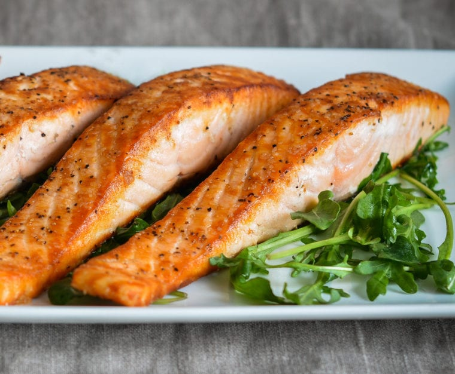

Home
Salmon

Description
Is there a fish more wholesome and forgiving to the home cook than filet of salmon? We have no idea, we've never tried to cook any other fish. Once you try this recipe you won't either!
Ingredients
- Filet of Salmon
- Olive Oil and Butter
- Lemon
Steps
- Heat olive oil on medium.
- When the oil is shimmering, add salmon, skin side up.
- Let the salmon cook for 6-7 minutes. Let it rest in place.
- Carefully prod the filet around the 6 minute mark. When it easily lifts from the pan, flip the skin side down and reduce the heat to medium-low
- Following a similar process for the skin side of the fish, let the filet rest for 4-5 minutes until you can lift the filet without it sticking
- Plate the fish, adorn with a sliver of butter and a squeeze of lemon